AlphaFold3¶
AlphaFold3 是 Google DeepMind 于 2024 年发布的新一代 AI 生物分子结构预测模型，核心亮点如下： 全分子覆盖：突破单一蛋白质限制，可高精度预测蛋白质、DNA、RNA、小分子配体及离子的复合体结构。 技术革新：引入扩散模型架构，显著提升了对复杂复合物和非蛋白分子的预测准确率。 赋能药研：能精准预测药物与靶点的结合模式，大幅加速药物发现并降低实验成本。 开放共享：提供免费服务器供非商业研究使用，降低了全球科研门槛。 平台提供两个版本，均可使用
软件路径¶
Tips
/opt/app/alphafold_3
/opt/app/alphafold_3.0.1
如何使用¶
本文内容为从0开始进行分析及环境检测，适用初次上手情况，已具备操作能力可根据下列步骤酌情选择操作。
运行环境检查¶
keypoint：在运行 AlphaFold3 之前，请确保已完成以下环境检查，以保证软件的正常运行。(可选)
1、进入 AlphaFold 3 安装目录，确认目录存在。
1 | |
证明：命令返回 /opt/app/alphafold_3.0.1，说明 AlphaFold 3 安装目录存在。

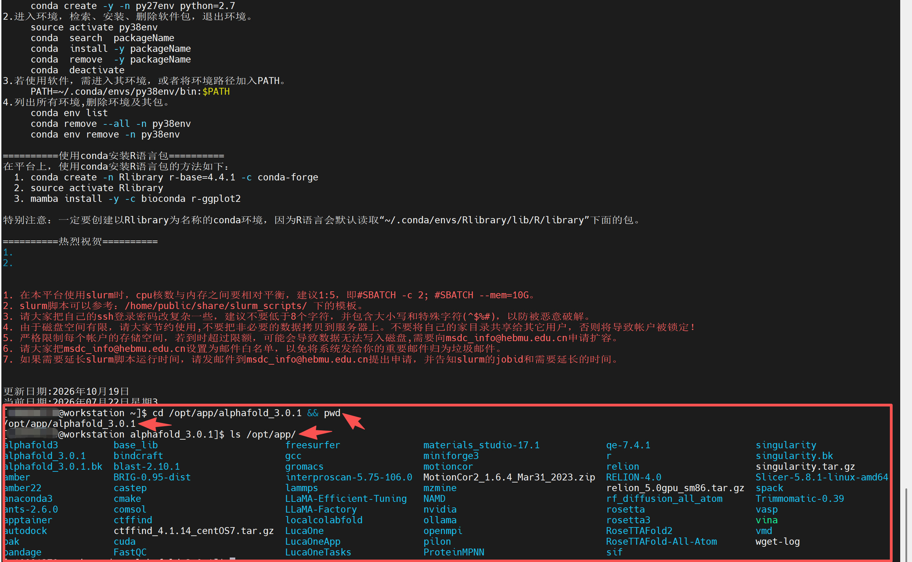
2、查看 AlphaFold 3 安装目录内容，确认程序文件和数据目录是否完整。
1 | |
证明：返回结果中出现 af3_demo、models、public_databases、run_alphafold.py、requirements.txt、src 等文件或目录，说明 AlphaFold 3 安装结构存在。

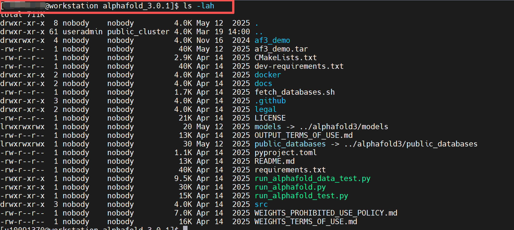
3、查看当前 Conda 中已有的环境，确认 AlphaFold 3 环境实际名称。
1 | |
证明：返回结果中出现 mlfold 环境，说明系统中存在可用于 AlphaFold 3 验证的 Conda 环境。

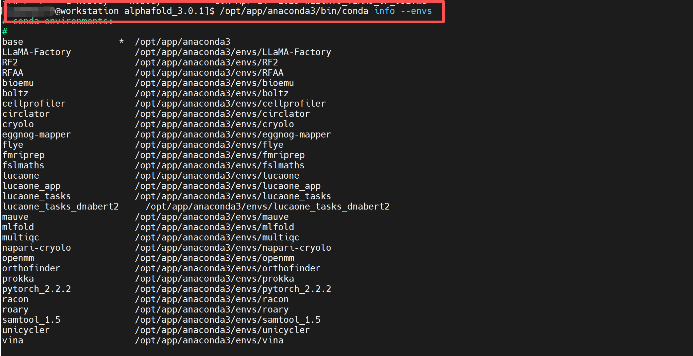
4、激活 mlfold Conda 环境。
1 | |
证明：命令执行后终端前缀出现 (mlfold)，说明 mlfold 环境已激活。

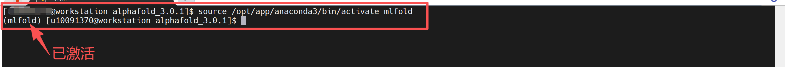
5、确认当前环境使用的是 mlfold 中的 Python。
1 | |
证明：which python 返回 /opt/app/anaconda3/envs/mlfold/bin/python，且 Python 版本正常输出，说明当前使用的是 mlfold 环境中的 Python。

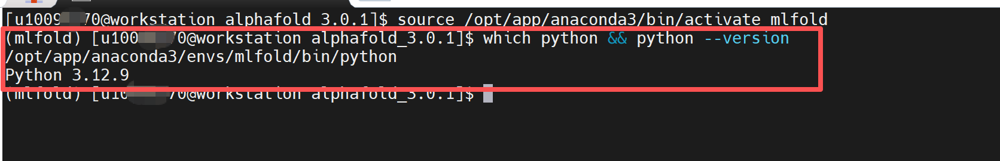
6、测试当前环境是否可以导入 alphafold3 模块。
1 2 3 | |
证明：返回 alphafold3 import OK，说明 alphafold3 基础 Python 模块可以正常导入。

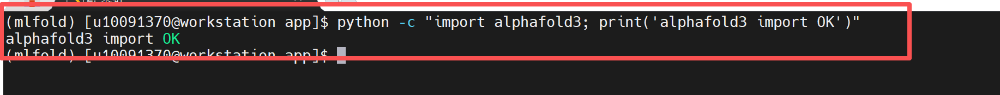
验证步骤¶
7、确认 AlphaFold3 验证压缩包已上传到公共目录。
1 | |
证明：返回 /home/share/验证示例文件/alphafold3_validation_case.zip，说明 AlphaFold3 验证压缩包已上传成功。

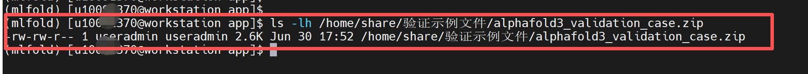
8、创建 AlphaFold3 验证目录。
- 返回根目录
cd ~
删除历史测试文件夹（如无可不操作）
1 | |
创建验证运行目录
1 | |
进入验证运行目录
1 | |
证明：进入 /home/useradmin/alphafold3_validation，说明验证运行目录创建成功。

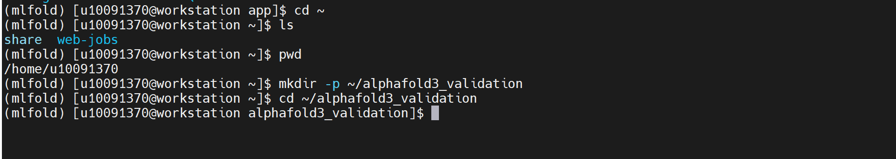
9、解压 AlphaFold3 验证压缩包。
1 | |
1 | |
证明：解压后生成 af_input/fold_input.json、README.txt 等文件，说明 AlphaFold3 验证输入文件准备完成。

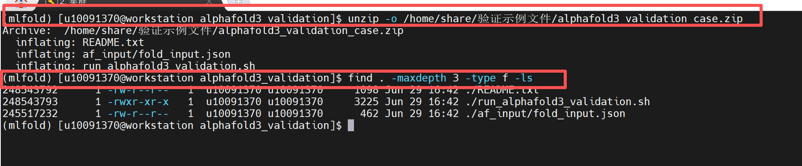
10、查看 AlphaFold3 输入 JSON 文件。
1 | |
证明：文件中包含 name、sequences、protein、id、sequence、modelSeeds、dialect、version 等字段，说明该文件为 AlphaFold3 JSON 输入文件。

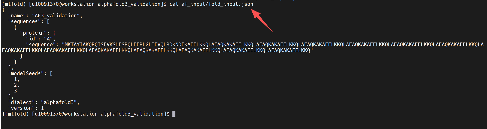
11、检查 JSON 文件中的序列长度和随机种子。
1 2 3 4 5 6 7 8 9 10 11 12 13 14 15 16 | |
证明：返回 sequence length = 243，modelSeeds = [1, 2, 3]，JSON check OK，说明 AlphaFold3 输入文件结构正常。

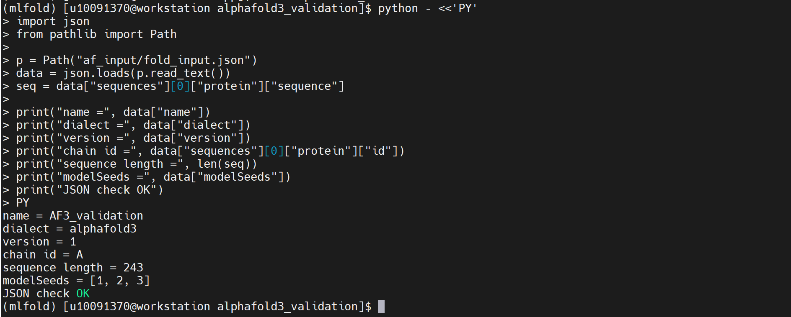
12、申请 GPU 节点。
1 | |
证明：返回 job allocation 信息，并提示 GPU 节点资源已分配，说明 GPU 节点资源申请成功。

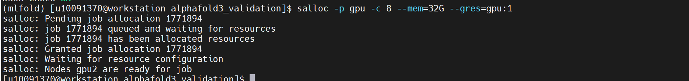
13、进入已分配的 GPU 节点。
1 | |
证明：终端提示符切换为 gpu2，说明已进入分配的 GPU 节点。 说明：如果实际分配的节点不是 gpu2，则进入实际分配的 GPU 节点。

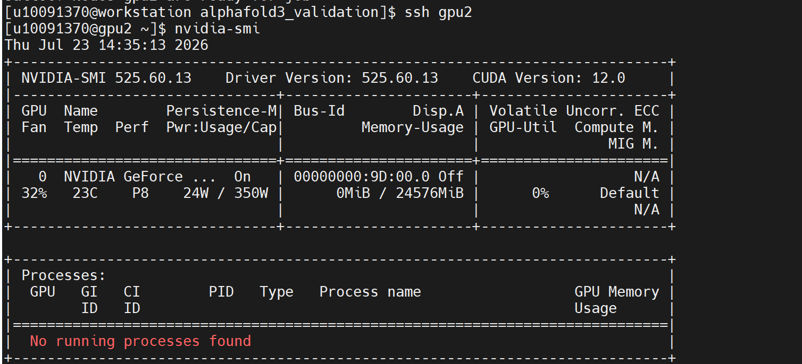
14、查看 NVIDIA GPU 状态。
1 | |
证明：返回 NVIDIA-SMI 信息，显示 Driver Version、CUDA Version、GPU 显存和进程信息，说明 GPU 节点和 NVIDIA 驱动可正常识别。
15、进入 AlphaFold3 验证目录。
1 2 3 | |
证明：当前路径为 /home/useradmin/alphafold3_validation，目录中存在 af_input、README.txt 等文件。

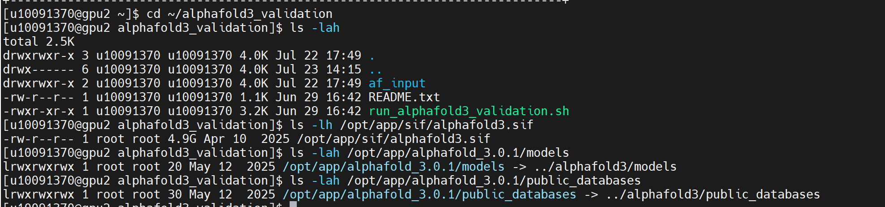
16、确认 AlphaFold3 容器、模型目录和数据库目录存在。
1 | |
1 | |
1 | |
证明：返回 alphafold3.sif 容器文件，models 和 public_databases 目录或软链接存在，说明 AlphaFold3 容器、模型权重和公共数据库路径可识别。
17、确认 NVIDIA 驱动库目录。
1 | |
证明：返回结果中存在 525.60.13，并且 current -> 525.60.13，说明服务器中存在可用于容器挂载的 NVIDIA 驱动库目录。
18、测试 Apptainer 容器内是否能够识别 GPU。
1 2 3 4 5 6 | |
证明：返回 [CudaDevice(id=0)]，说明 AlphaFold3 容器内可以识别 GPU。

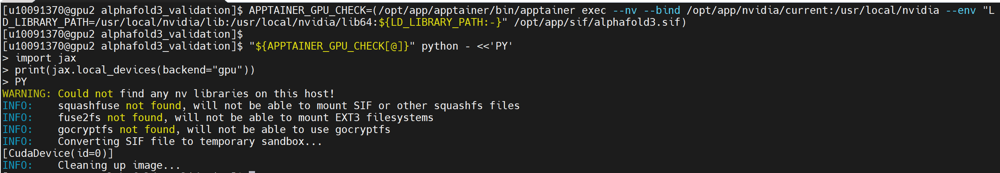
19、生成 AlphaFold3 基础环境与容器 GPU 识别验证脚本。
1 2 3 4 5 6 7 8 9 10 11 12 13 14 15 16 17 18 19 20 21 22 23 24 25 26 27 28 29 30 31 32 33 34 35 36 37 38 39 40 41 42 43 44 45 46 47 48 49 50 51 52 53 54 55 56 57 58 | |
grep -E "AlphaFold3 basic|input_name|dialect|version|chain_id|sequence_length|modelSeeds|gpu_devices|alphafold3_import|validation_status|calculation_rounds|checksum|result" "$OUT_DIR/af3_basic_validation.log" > "$OUT_DIR/af3_basic_validation_summary.txt"
cat "$OUT_DIR/af3_basic_validation_summary.txt" EOF
1 | |
证明：生成 run_alphafold3_basic_validation.sh 脚本，用于验证 AlphaFold3 容器启动、输入 JSON 读取、alphafold3 模块导入、GPU 识别和基础运行稳定性。

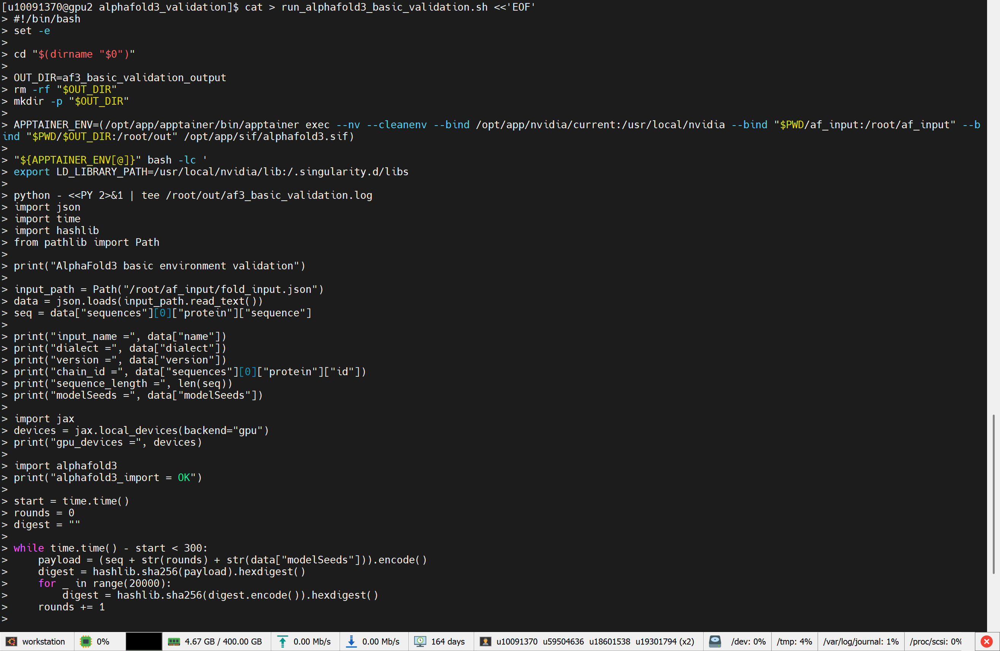

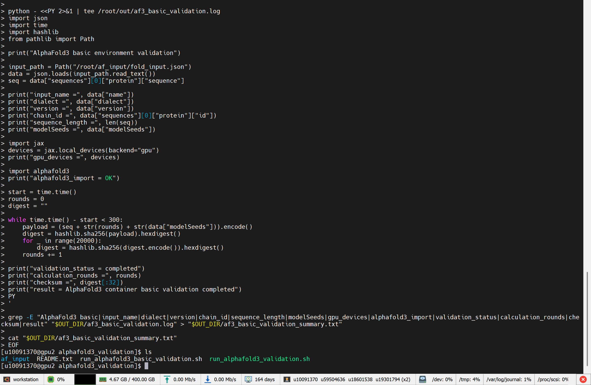
20、运行 AlphaFold3 基础验证脚本。
1 | |
证明：脚本执行后输出 AlphaFold3 basic environment validation、gpu_devices = [CudaDevice(id=0)]、alphafold3_import = OK、validation_status = completed、checksum、result = AlphaFold3 container basic validation completed，说明 AlphaFold3 基础环境与容器 GPU 识别验证完成。

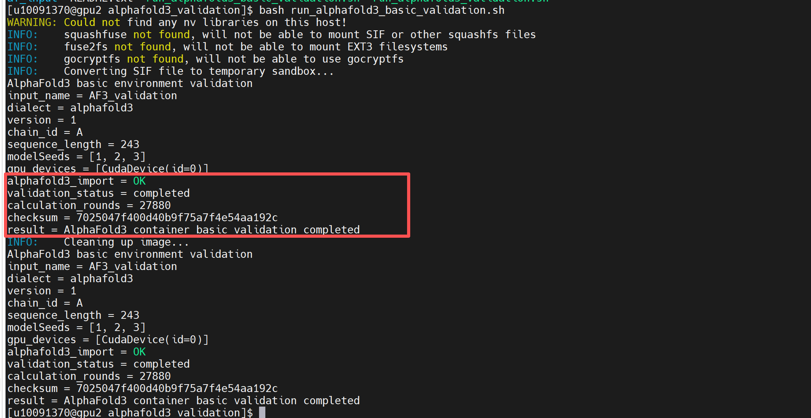
21、查看 AlphaFold3 基础验证日志。
1 | |
证明：日志中包含输入文件名称、序列长度、modelSeeds、GPU 设备信息、alphafold3 模块导入结果、运行完成状态和 checksum 校验值，说明验证过程有完整日志记录。

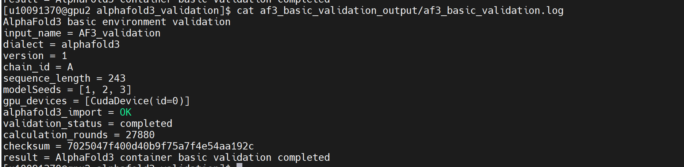
22、查看 AlphaFold3 基础验证汇总文件。
1 | |
证明：汇总文件中出现 gpu_devices = [CudaDevice(id=0)]、alphafold3_import = OK、validation_status = completed、result = AlphaFold3 container basic validation completed，说明验证结果已生成。

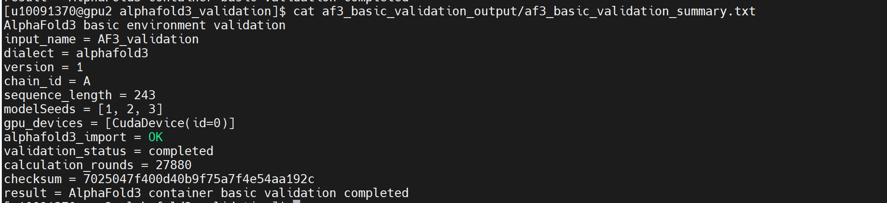
23、检查 AlphaFold3 验证信息。
1 | |
证明：如果未出现 Traceback、ImportError、No visible GPU devices、Unable to initialize backend、FAILED_PRECONDITION、ERROR 等异常信息，说明基础验证过程未发生异常中断。

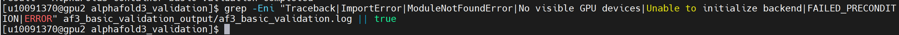
24、保存验证输入文件、脚本、日志和汇总结果到公共目录。（此步骤需具备路径的写入权限，可不验证执行）
1 2 3 4 5 6 7 | |
1 | |
证明：公共目录中保存 af_input、af3_basic_validation_output、README.txt、run_alphafold3_basic_validation.sh，便于后续复测和验收查看。

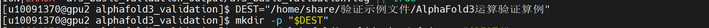
25、退出 GPU 节点并释放资源。
1 | |
1 | |
证明：退出 GPU 节点后回到登录节点，squeue -u $USER 不再显示当前 GPU 作业，说明 GPU 交互资源已释放。

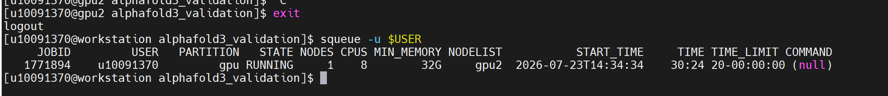
参考资料¶
AlphaFold3 GitHub: https://github.com/google-deepmind/alphafold3